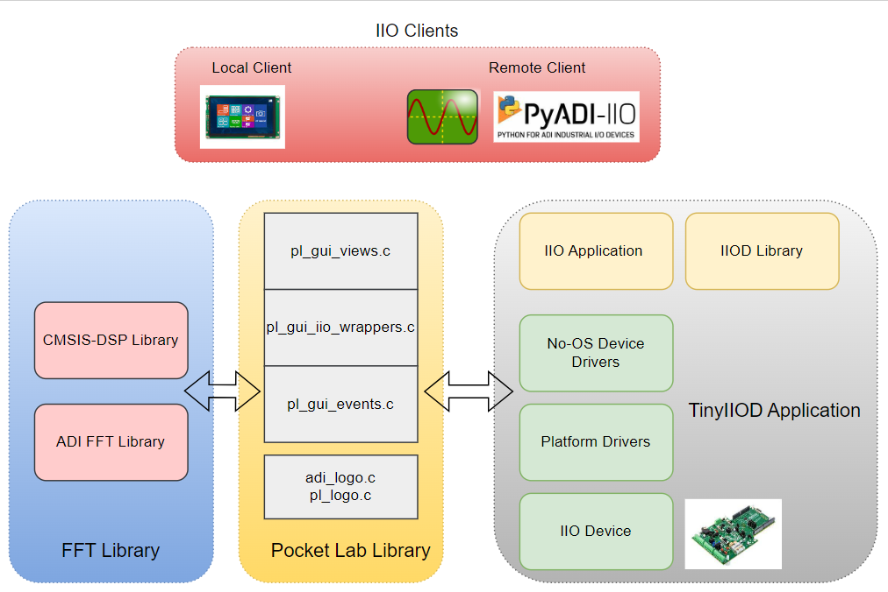
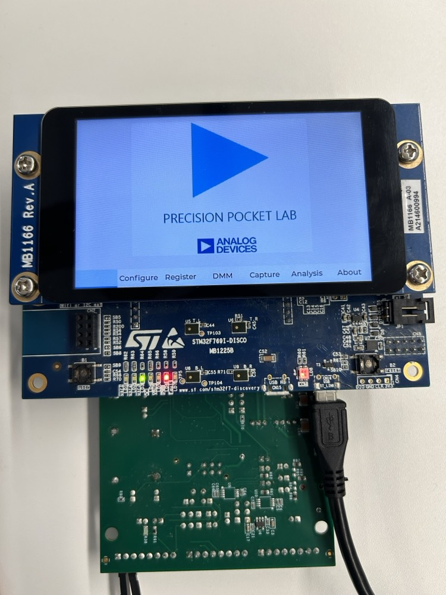
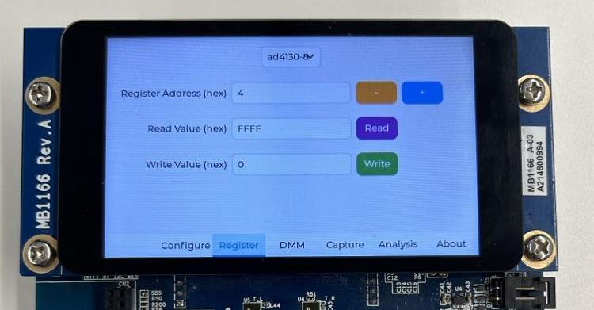
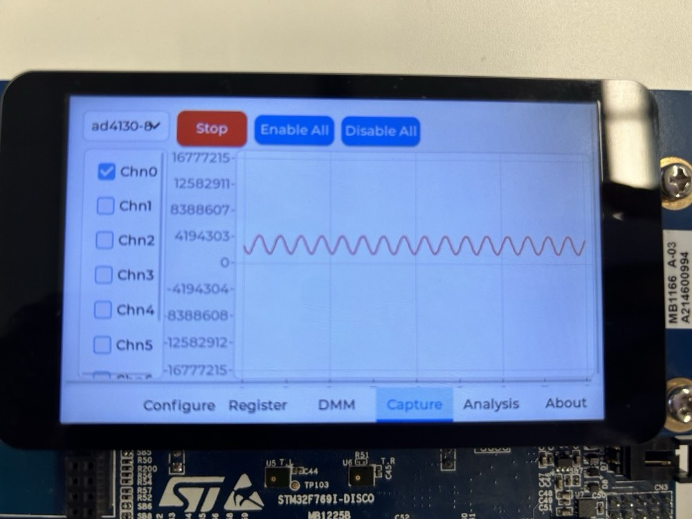
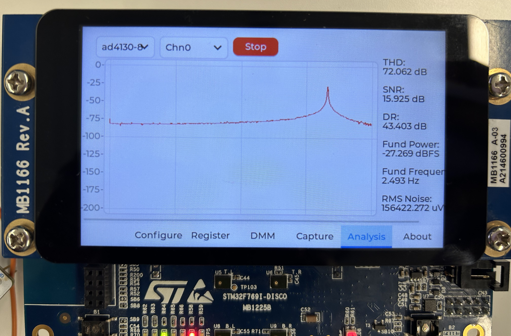
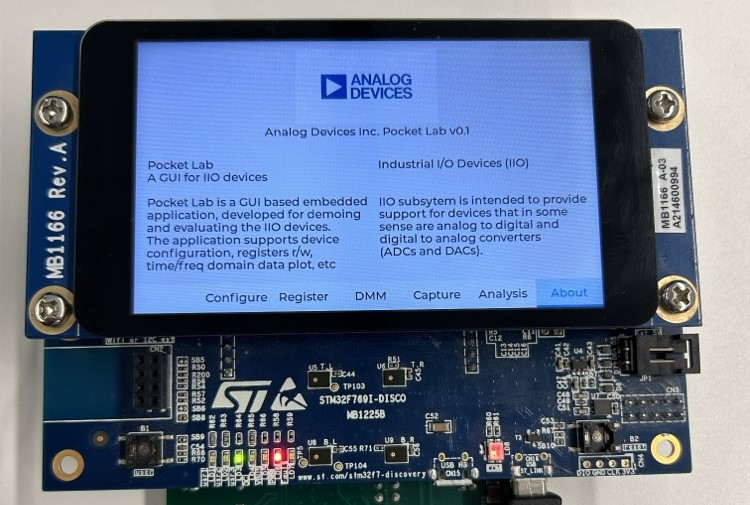

Introduction#
Pocket lab is a portable display-based embedded solution created primarily for demoing the ADCs functionality. Pocket Lab makes use of STM32F769NI-Discovery board from ST microelectronics and 3rd party library LVGL. The demo functionality was primarily focused on device configuration, register memory access, data capture and FFT analysis. This documentation describes various components of pocket lab application in subsequent sections.
Pocketlab Firmware Structure#
Below diagram illustrates the architecture of Precision Converters Pocketlab firmware applications.
{kind=link}
Pocketlab Library#
Source Code: Precision Converters Library Doxygen: Doxygen for Pocket Lab
Pocket lab library makes use of ‘lvgl (Light versatile graphics library)’. LVGL is primarily targeted for the embedded display-based applications. LVGL is an abstracted library, which supports multiple display boards from the different vendors. So, it’s vendors responsibility to add lvgl support for their display board. This version of pocket lab library is based on the latest development version of lvgl library. The source code link is: https://github.com/lvgl/lvgl/tree/7506b61527195fdc96803fe94f5ba141b6e5a9e8
LVGL uses vendor created portable library to handle the display and touchscreen events. Current version of pocket lab library is targeted for the STM32F769NI Discovery board from ST microelectronics. The lvgl portable library for the board used is present here: https://github.com/lvgl/lv_port_stm32f769_disco/tree/4f26b19d42816f10fb8e51a968b2ec924c1e75ba
Pocket Lab library mainly contains 3 source modules:
pl_gui_views.c/.h
pl_gui_iio_wrappers.c/.h
pl_gui_events.c/.h
Running Pocket Lab#
Hardware setup#
Stack the Eval board on the discovery board. Power the board with USB to Micro B cable through the USB ST link port on the board as shown below
Comment out the pocketlab libraries to include them in .mbedignore.
Change the ACTIVE_IIO_CLIENT to IIO_CLIENT_REMOTE to select pocketlab as a client.
{kind=link}
Flash the binary on the board and the board gets powered on with a default view as shown below
{kind=link}
Pocket Lab GUI Views#
This module takes care of any event happening on the display GUI. The GUI is created in the form of widgets such as buttons, text fields, drop-down menus, etc. Each widget would have associated event handler callback function, that would be registered for a given event object during pocket lab GUI initialization time. The event handler function would be responsible for handling the user event and forming a proper response to that event. All the widgets, event objects and event callbacks are created using the lvgl library. Below are the standard views available for pocket lab and are created from the pocket lab library. Each Tinyiiod firmware application provides an ability to enable/disable these views.
Configuration View#
Provides ability to read and write the global and channel attributes of the device.

Register View#
This view provides low level access to the registers of the device. The user can read the register values in hex.
{kind=link}
DMM View#
This view continuously displays device specific ADC read back value in SI Units, once start button is activated. There is an option to enable and disable all the channels.

Capture View#
In this view adc raw data can be captured and visualized as waveforms continuously once the start button is activated.
{kind=link}
Analysis View#
In this view FFT analysis can be visualized. Key information such as SNR, THD, Fund Power, freq and RMS noise is displayed on the right pane.
FFT analysis can be performed only on one channel at a time.
{kind=link}
About View#
About screen is used to provide high level product features and some presentation material on the product’s value and USP
{kind=link}
Note
Make sure to select the channels and then press the start button for capture / dmm view. Only one PL GUI view should be accessed at a time. If the display misbehaves, press the onboard reset or replug the board.